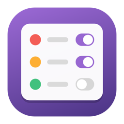
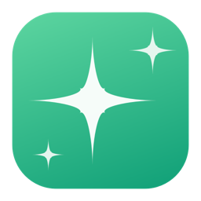
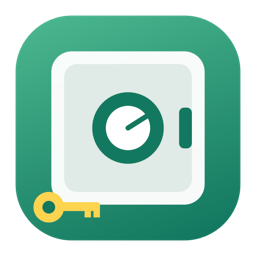

Six small Mac apps.
Each does one thing, says exactly what it touches, and never phones home. Free, MIT licensed, no accounts. Built by Keith Adler.
Meet for Mac
It sits in the meeting with you. Ask "do I have anything at 2 tomorrow?" and your calendar answers. When the other side asks what you agreed last time, the quote appears before you look. Two people on one microphone are told apart and named. Then the notes write themselves.
Nothing leaves the Mac. No bot joins the call, nothing is uploaded, not even to write the notes.
DownloadSourceAsk for Mac
Ask your Mac a question in your own words, from any app with ⌥ Space. Get the answer, and the file it came from. Documents, downloads, iCloud Drive, mail, screenshots and notes, read on this Mac.
Nothing leaves the Mac. Apple's on-device model writes the answer with citations, and says so when your files don't have it.
DownloadSource
Permissions for Mac
Every permission on your Mac on one screen, in plain English, with what changed since last week. Camera, microphone, screen, keyboard, files, and everything that starts without you.
It never changes a permission for an app you have. Also a command line with policy audits for fleets.
DownloadSource

Stash for Mac
Encrypted backup into storage you already have: the Google Drive that comes with Gmail, the OneDrive that comes with 365, iCloud, Dropbox, a disk, a NAS. Several at once, on a schedule.
The provider only ever sees ciphertext. Your key is 24 words on a card. No password, no recovery, no server.
DownloadSourceAll five are ad-hoc signed, so the first open is a right-click and Open. Each checks GitHub once a day for a new version and can be told not to. Nothing else leaves the Mac.